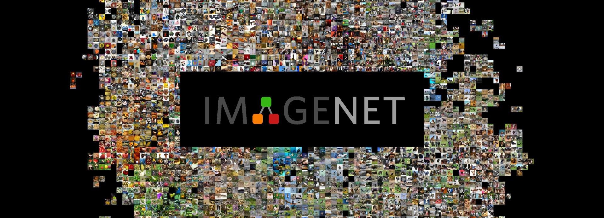

Deep Learning
Con Keras y TensorFlow
Creado por Roberto Saavedra, Alejandro Rayo y Sergio Rodriguez
IA, MACHINE LEARNING Y DEEP LEARNING
REDES NEURONALES
HANDS-ON DEEP LEARNING
¿DÓNDE ENCONTRAR UN COMPORTAMIENTO INTELIGENTE?


from tensorflow import keras
(imagenes, etiquetas), (_, _) = keras.datasets.mnist.load_data()

red_neuronal = keras.models.Sequential([ keras.layers.Flatten(input_shape=[28, 28]), keras.layers.Dense(100, activation="sigmoid"), keras.layers.Dense(10, activation="softmax") ])
red_neuronal.compile(loss='sparse_categorical_crossentropy', optimizer=keras.optimizers.SGD(lr=0.05), metrics=['accuracy']) early_stopping = keras.callbacks.EarlyStopping() red_neuronal.fit(imagenes_entrenamiento, etiquetas_entrenamiento, epochs=10, validation_split=0.1, callbacks=[early_stopping])Train on 54000 samples, validate on 6000 samples Epoch 1/10 54000/54000 [==============================] - 4s 72us/sample loss: 0.9310 - accuracy: 0.7128 - val_loss: 0.6660 - val_accuracy: 0.7867 Epoch 2/10 54000/54000 [==============================] - 3s 62us/sample loss: 0.7030 - accuracy: 0.7799 - val_loss: 0.6760 - val_accuracy: 0.7887
red_neuronal_2 = keras.models.Sequential([ keras.layers.Flatten(input_shape=[28, 28]), keras.layers.BatchNormalization(), keras.layers.Dense(200, activation="selu", kernel_initializer="lecun_normal"), keras.layers.BatchNormalization(), keras.layers.Dense(100, activation="selu", kernel_initializer="lecun_normal"), keras.layers.BatchNormalization(), keras.layers.Dense(10, activation="softmax") ]) red_neuronal_2.compile(loss='sparse_categorical_crossentropy', optimizer=keras.optimizers.SGD(lr=0.05), metrics=['accuracy']) red_neuronal_2.fit(imagenes_entrenamiento, etiquetas_entrenamiento,epochs=10, validation_split=0.1, callbacks=[early_stopping])
REDES NEURONALES CONVOLUCIONALES


MODELOS PRE-ENTRENADOS
RESNET-50
+

from urllib.request import urlopen, Request
import matplotlib.pyplot as plt
import tensorflow as tf
headers = {'User-Agent': 'Mozilla/5.0 (Windows NT 6.1) AppleWebKit/537.36 (KHTML, like Gecko) Chrome/41.0.2228.0 Safari/537.3'}
imagen_perro = plt.imread(urlopen(Request('https://cdn.pixabay.com/photo/2015/11/17/13/13/dogue-de-bordeaux-1047521_1280.jpg', headers=headers)), format='jpg')
castillo = plt.imread(urlopen(Request('https://www.audioguiaroma.com/imagenes/castillo-san-angelo.jpg', headers=headers)), format='jpg')
imagen_perro_crop = tf.image.resize_with_pad(imagen_perro, 224,224, antialias=True)
castillo_crop = tf.image.resize_with_pad(castillo, 224, 224,antialias=True)
imagenes = keras.applications.resnet50.preprocess_input(np.array([imagen_perro_crop, castillo_crop]))
neural_network_on_steroids = keras.applications.resnet50.ResNet50(weights="imagenet")
pred = neural_network_on_steroids.predict(imagenes)
| Predicciones para perro | Probabilidad | Predicciones para castillo | Probabilidad |
|---|---|---|---|
| vizsla | 58.95% | palace | 45.57% |
| labrador_retriever | 29.05% | dome | 23.81% |
| bull_mastif | 1.68% | castle | 12.66% |
3Blue1Brown: Deep Learning
Dot CSV: Aprendiendo Inteligencia Artificial
Standford Machine Learning taught by Andrew NG
Hands-on Machine Learning with Scikit-Learn, Keras, and TensorFlow
MIT Introduction to Deep Learning